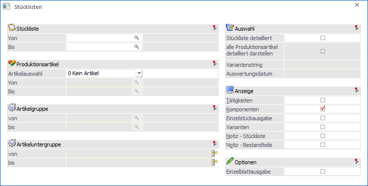
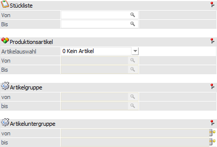
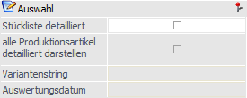
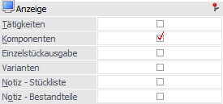
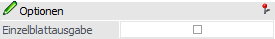
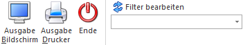

Im Programmbereich
1 WinLine PPS
1 Auswertungen
1 Stückliste
kann eine Liste aller bereits angelegten Stücklisten / Produktionslisten ausgegeben werden.

Die Ausgabe kann durch folgende Kriterien eingeschränkt bzw. beeinflusst werden:
Selektion

Ø Stückliste von / bis
An dieser Stelle kann eine Einschränkung auf die auszugebenden Produktionsstücklisten, erfolgen.
Ø Artikelauswahl
Mit Hilfe einer Auswahlliste kann die Ausgabeart der Auswertung definiert werden. Folgende Möglichkeiten stehen zur Verfügung:
ü 0 - Kein Artikel
Bei dieser
Option werden nur die Produktionsstücklisten ausgegeben.
ü 1 - Stückliste - Artikel
Bei
dieser Option werden alle Produktionsstücklisten ausgedruckt, wobei auch die
Fertigprodukte gedruckt werden, bei denen diese Stückliste hinterlegt wurde. Die
Sortierung der Liste erfolgt nach den Produktionsstücklistennummern.
ü 2 - Artikel - Stückliste
Bei
dieser Option werden alle Produktionsartikel gedruckt, die eine
Produktionsstückliste hinterlegt haben. Dabei erfolgt die Sortierung nach der
Artikelnummer.
Hinweis
Wenn die Option "Artikelauswahl" auf "1 - Stückliste - Artikel" oder "2 - Artikel - Stückliste" gestellt wurde, so kann eine Selektion auf die Produktionsartikel vorgenommen werden.
Ø Produktionsartikel von / bis
An dieser Stelle kann eine Einschränkung auf die auszuwertenden Produktionsartikel erfolgen. Dieses ist allerdings nur möglich, wenn mit der Artikelauswahl "1 - Stückliste - Artikel" oder "2 - Artikel - Stückliste" gearbeitet wird.
Hinweis
Wird im Feld "Produktionsartikel von / bis" z.B. nur eine Artikelnummer eingegeben und dieser Artikel hat auch noch Ausprägungen, so werden alle Ausprägungen automatisch mit angedruckt. Nur wenn während des Anklickens des entsprechenden "Ausgabe"-Buttons die STRG-Taste gedrückt wird, wird nur der Hauptartikel alleine ausgewertet.
Ø Artikelgruppe von / bis
In diesen Feldern kann nach den Artikelgruppen der Produktionsartikel eingeschränkt werden, welche in der Auswertung berücksichtigt werden sollen.
Ø Artikeluntergruppe von / bis
An dieser Stelle kann nach den Artikeluntergruppen der Produktionsartikel eingeschränkt werden. Bleiben die Felder leer, so werden alle Produktionsartikel aller Artikeluntergruppen in der Auswertung berücksichtigt.
Auswahl

Über diesen Bereich kann eine detaillierte Ausgabe der Stückliste(n) erfolgen. Die Optionen / Eingabefelder "alle Produktionsartikel detailliert darstellen", "Variantenstring" und "Auswertungsdatum" stehen nur zur Verfügung, wenn die Option "Stückliste detailliert" aktiviert wird.
Ø Stückliste detailliert
Durch Aktivierung dieser Option werden alle Ebenen und die dazugehörigen Komponenten der Stückliste angedruckt.
Hinweis
Wenn die Stückliste mit der Option "Stückliste detailliert" ausgegeben wird, dann kann bei den einzelnen Artikelzeilen eine Fußnote angezeigt werden, wobei es folgende Varianten gibt:
ü 1 - Artikel ist inaktiv
Der
Artikel wurde im Artikelstamm auf Inaktiv gesetzt.
ü 2 - Artikel ist nicht
freigegeben
Für den Artikel wurde im Artikelstamm noch kein
Freigabekennzeichen gesetzt.
ü 3 - Artikel ist noch nicht
gültig
Der Artikel wurde im Stücklistenstamm mit einem Gültigkeitszeitraum
versehen, der erst in der Zukunft liegt.
ü 4 - Artikel ist nicht mehr
gültig
Der Artikel wurde im Stücklistenstamm mit einem Gültigkeitszeitraum
versehen, der bereits in der Vergangenheit liegt.
Ø alle Produktionsartikel detailliert darstellen
Bei Aktivierung der Option "alle Produktionsartikel detailliert darstellen" werden bei allen Produktionsartikeln, welche in der Stückliste die Einstellung "Immer vom Lager" hinterlegt haben, die zugehörigen Unterkomponenten angezeigt.
Beispiel
In der Stückliste "Fahrrad" ist für das Halbfertigprodukt "19005 - Reifen" die Option "Immer vom Lager" aktiviert worden.
ü Option "alle Produktionsartikel
detailliert darstellen" deaktiviert
Bei Auswertung der Stückliste detailliert
wird in der Ausgabe das Halbfertigprodukt ""19005 - Reifen" (ohne
Unterkomponenten) ausgewiesen.
ü Option "alle Produktionsartikel
detailliert darstellen" aktiviert
Bei Auswertung der Stückliste detailliert
inklusive der Option "alle Produktionsartikel detailliert darstellen" wird in
der Ausgabe das Halbfertigprodukt "19005 - Reifen" inklusive zugehöriger
Unterkomponenten dargestellt.
Ø Variantenstring
An dieser Stelle kann definiert werden, mit welchen Varianteneinstellungen die Liste erzeugt werden soll. Die Eingabe des Felds steht in Abhängigkeit zu der Einstellung in den Applikationsparametern PPS (Varainten). Bei der Hinterlegung in den Parametern 0 Varianten 1-Stellig kann ein Variantenstring hinterlegt werden.
Ø Auswertungsdatum
Anhand des Auswertungsdatums wird geprüft, ob z.B. ein Artikel gültig ist oder nicht. Wird kein Datum eingetragen, wird das aktuelle Datum verwendet.
Anzeige

In diesem Bereich können weitere Elemente für die Ausgabe aktiviert werden. Sollte mit der Option "Stückliste detailliert" gearbeitet werden, so steht nur "Tätigkeiten" zur Verfügung.
Ø Tätigkeiten
Durch Aktivierung dieser Option werden auch die in der Stückliste enthaltenen Tätigkeiten gedruckt.
Ø Komponenten
Ist diese Option aktiv, so werden alle Komponenten, aus welchen die Produktionsstückliste besteht, gedruckt. Ist die Option inaktiv, so wird nur die Produktionsstückliste gedruckt.
Ø Einzelstückausgabe
Ist die Einheit einer Stückliste ungleich 1 und wird diese Option vor der Ausgabe aktiviert, so werden die Mengen auf der Auswertung für die Produktionseinheit von 1 Stück heruntergebrochen.
Ø Varianten
Durch Aktivierung dieser Option werden die Varianten der Stückliste ebenfalls ausgegeben.
Ø Notiz - Stückliste
Ist diese Option aktiv, so werden jene Notizen, die bei den Stücklisten hinterlegt wurden (Register "Notiz" - Feld "Notiz"), ebenfalls ausgegeben.
Ø Notiz - Bestandteile
Wurde diese Option aktiviert, so werden jene Texte, die für die Komponente / Tätigkeiten in der Stückliste hinterlegt wurden (die sogenannten "Teile-Notizen"), ausgegeben.
Optionen

Ø Einzelblattausgabe
Wenn diese Option aktiviert ist, dann wird jede Stückliste auf einer eigenen Seite ausgegeben. Bleibt die Option hingegen deaktiviert, dann werden alle Stücklisten in "Journalform" gedruckt.
Buttons

Ø Ausgabe Bildschirm
Mit Hilfe des Buttons "Ausgabe Bildschirm" oder der Taste F5 wird die Auswertung am Bildschirm ausgegeben.
Ø Ausgabe Drucker
Durch Anwahl des Buttons "Ausgabe Drucker" wird die Auswertung am Drucker ausgegeben.
Ø Ende
Durch Anwahl des Buttons "Ende" bzw. der Taste ESC wird das Fenster geschlossen.
Ø Filter bearbeiten
Durch Anklicken des Buttons "Filter bearbeiten" kann die Auswertung nach frei definierbaren Kriterien eingeschränkt werden (bezogen auf den Produktionsartikel). Der Filter steht aber nur zur Verfügung, wenn die Artikelauswahl "2 - Artikel - Stückliste" verwendet wird.